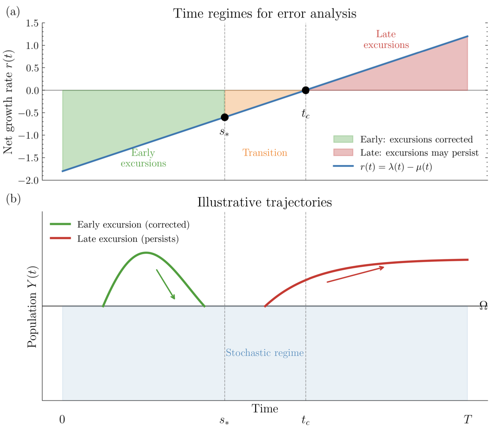
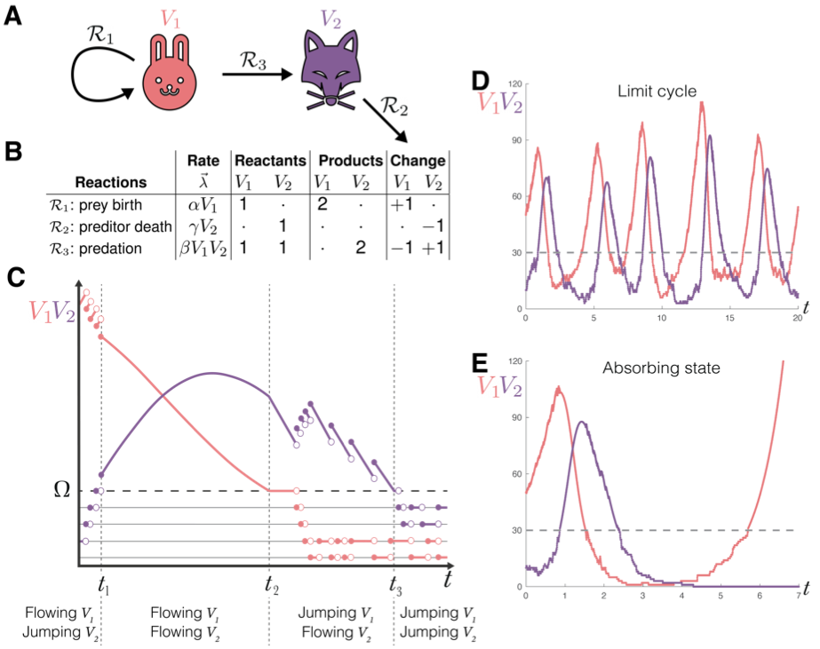
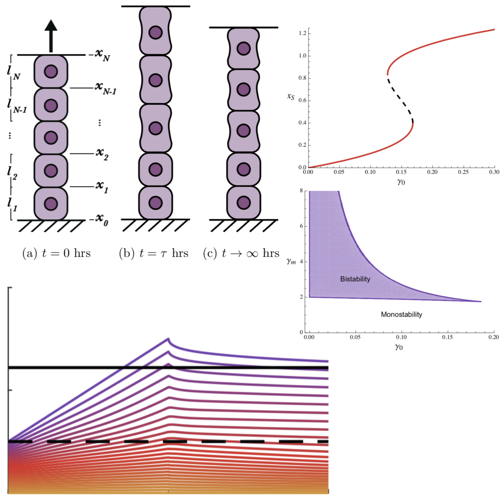
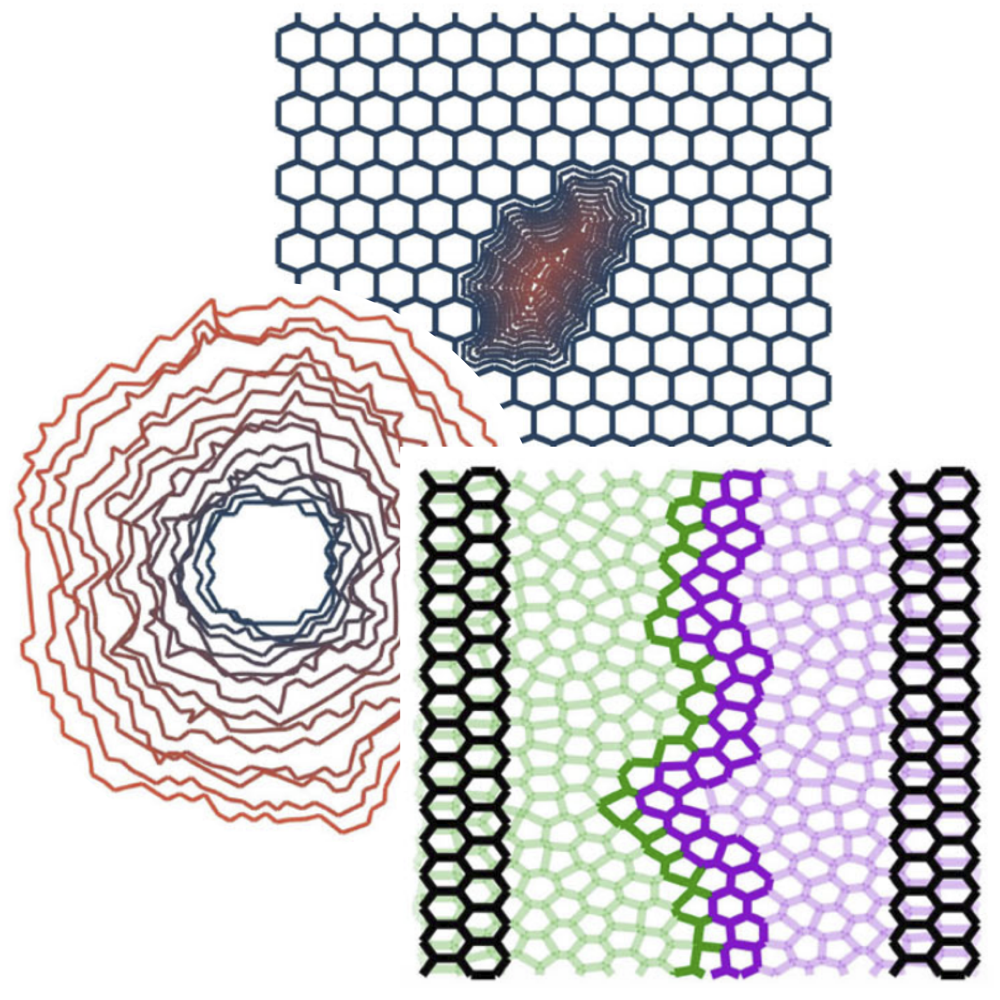
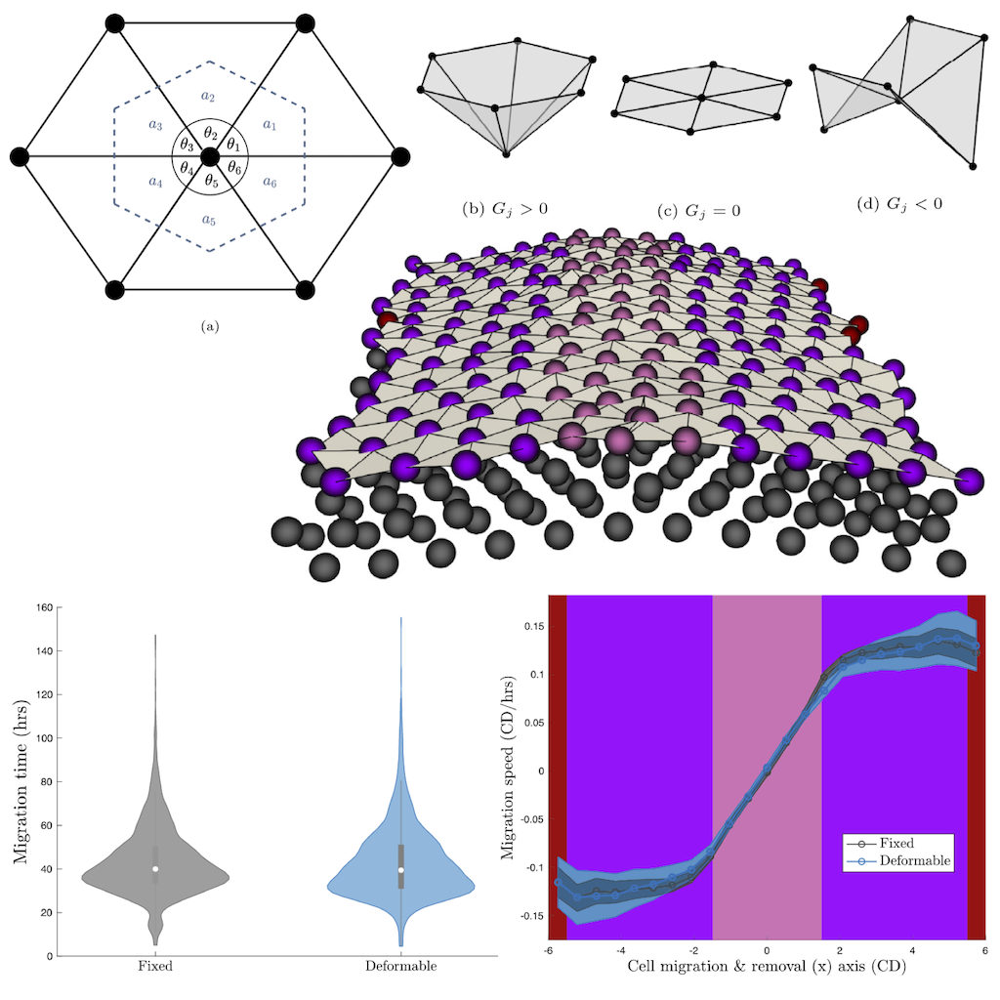
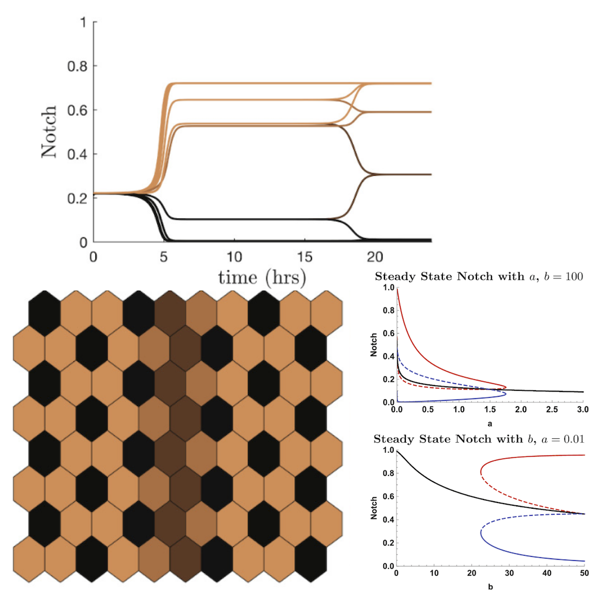
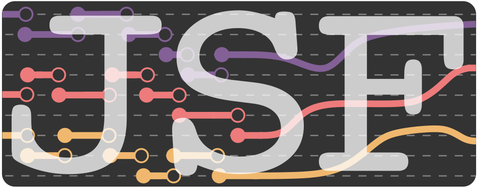

Welcome
Hello, I am a Research Fellow in the School of Mathematics and Statistics at The University of Melbourne!
I am interested in Mathematical Biology and Applied Mathematics, with research problems within Tissue Dynamics and Dynamical Systems. My current research interests include understanding how the immune system functions, how diseases progress in people and become can chronic, tissue dynamics and model development, and developing hybrid stochastic-deterministic methodology.
If you're interested in any of my work, please feel free to contact me at domenic (at) unimelb.edu.au !
Select Publications
Multiscale Modelling of Birth-Death Processes (2026)

Modelling the immune system’s role in endometriosis onset (2025)

A hybrid SSA-ODE framework for compartmental systems (2024)

Active tissue remodelling (2023)

Modelling tissue boundaries in multicellular systems (2023)

A 3D realistic deformable model of simple epithelia (2022)

Dynamic cell fate selection (2020)

Software
Jump-Switch-Flow: A hybrid SSA-ODE framework for simulating compartmental models

Developed with Dr. Alexander Zarebski
Engagement
- I am the current Secretary of the Mathematical Biology Special Interest Group associated with ANZIAM (2026).
- I organised the annual one-day Mathematical Biology Special Interest Group Workshop, following the ANZIAM 2025 conference, and also the MBSIG Hubbed meeting for 2025.
- I was an organiser for a week long MATRIX Research Program, titled Mathematics of Tissue Dynamics (2022).
- I was an organiser for a one-day conference, titled “Frontiers of Mathematical Biology: A workshop honouring Prof Edmund Crampin” (2022).
- From 2022 to 2026, I have been on the ANZIAM Mathematical Biology Special Interest Group Committee.